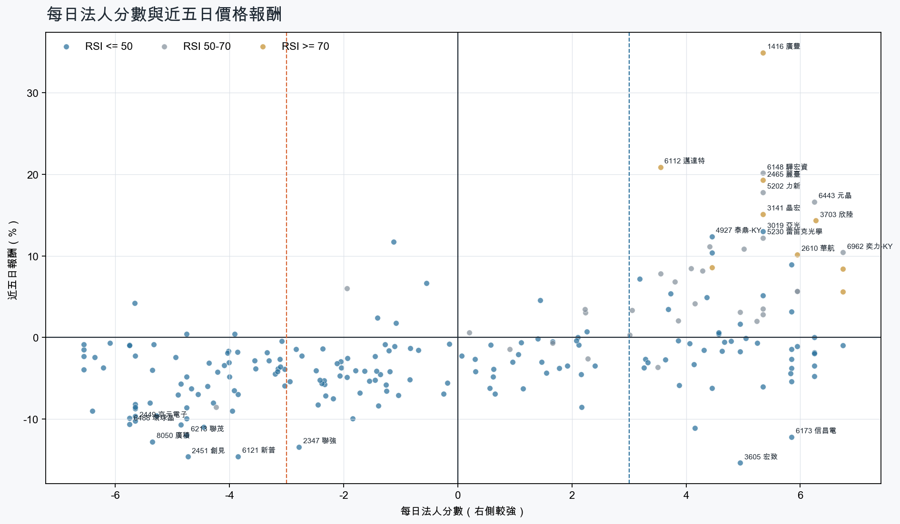
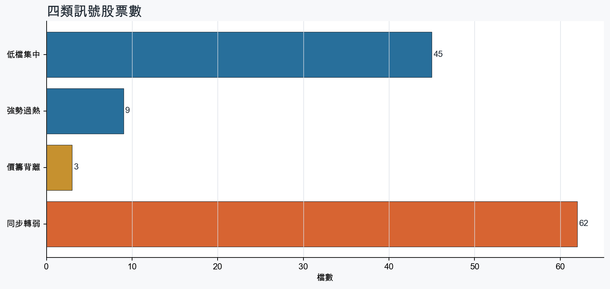
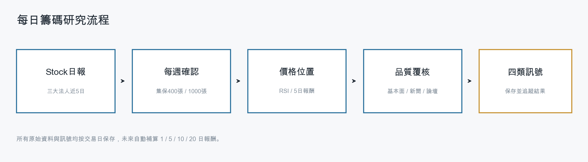
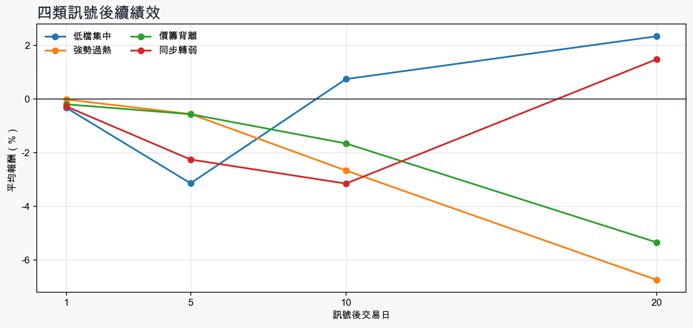

市場情緒偏空
近5日法人合計-8,218,658 張
篩選池上漲比例25.5%
籌碼好 / RSI低15 檔
籌碼差 / 價跌15 檔



EPS × PE VALUATION
法人常用的相對估值
顯示保守、基準與樂觀估值帶，不把單一數字包裝成精準目標價。
最新累計 EPS 依季數年化 × 同產業有效 P/E 的 Q25／中位數／Q75。排除本公司、非正 P/E，並以 1.5×IQR 排除離群值。估值帶是公開資料篩選值，不是法人目標價；未使用分析師預估 EPS。
MOOD × MONEY
情緒與籌碼雷達
熱度代表被討論程度；情緒分與法人方向分開計算。熱門不等於適合追價，樣本不足也不硬判多空。
| 股票 | 情緒 | 討論熱度 | 情緒 × 籌碼 | 情緒 × 基本面 |
|---|---|---|---|---|
| 2451 創見同步轉弱 | 偏多 +30.3信心 100 | 1002 篇 / 307 留言 / 3 則新聞 | 熱門但法人撤退法人分 -4.7 | 基本面與情緒共振基本面分 +3.6 |
| 2454 聯發科價籌背離 | 中性分歧 +10.3信心 100 | 952 篇 / 226 留言 / 3 則新聞 | 高熱分歧法人分 -5.7 | 基本面與情緒分歧基本面分 +0.8 |
| 2308 台達電價籌背離 | 偏多 +24.7信心 100 | 942 篇 / 217 留言 / 3 則新聞 | 熱門但法人撤退法人分 -3.9 | 基本面與情緒共振基本面分 +3.6 |
| 6213 聯茂同步轉弱 | 情緒高漲 +41.8信心 100 | 792 篇 / 76 留言 / 3 則新聞 | 熱門但法人撤退法人分 -4.8 | 基本面與情緒共振基本面分 +3.6 |
| 3189 景碩同步轉弱 | 中性分歧 +0.0信心 94 | 792 篇 / 75 留言 / 3 則新聞 | 高熱分歧法人分 -4.0 | 基本面與情緒分歧基本面分 +3.6 |
| 2323 中環同步轉弱 | 偏空 -31.7信心 66 | 692 篇 / 38 留言 / 1 則新聞 | 情籌雙弱法人分 -5.3 | 基本面佳、情緒悲觀基本面分 +2.0 |
| 3037 欣興同步轉弱 | 偏空 -15.5信心 71 | 661 篇 / 29 留言 / 3 則新聞 | 情籌混合法人分 -5.7 | 基本面與情緒分歧基本面分 +3.6 |
| 3363 上詮低檔集中 | 偏多 +20.1信心 64 | 611 篇 / 18 留言 / 3 則新聞 | 情籌共振法人分 +6.0 | 基本面與情緒分歧基本面分 +0.7 |
| 2465 麗臺強勢過熱 | 中性分歧 +0.0信心 37 | 461 篇 / 1 留言 / 2 則新聞 | 情籌混合法人分 +5.3 | 基本面與情緒分歧基本面分 +1.2 |
| 2449 京元電子同步轉弱 | 中性分歧 +0.0信心 30 | 400 篇 / 0 留言 / 3 則新聞 | 情籌混合法人分 -5.7 | 基本面與情緒分歧基本面分 +3.6 |
| 6274 台燿同步轉弱 | 偏多 +29.7信心 30 | 400 篇 / 0 留言 / 3 則新聞 | 熱門但法人撤退法人分 -5.8 | 基本面與情緒共振基本面分 +3.6 |
| 2327 國巨*同步轉弱 | 中性分歧 +0.0信心 30 | 400 篇 / 0 留言 / 3 則新聞 | 情籌混合法人分 -4.3 | 基本面與情緒分歧基本面分 +2.0 |
01
籌碼好 / RSI低
優先研究基本面；法人續買且價格止穩時，才適合分批觀察。
| 股票 / 確認狀態 | 每日法人分 | 浦男式近似 | 法人加速度 | RSI / 相對強弱 | 量價確認 | 融資融券 | 每週集保確認 | 基本面 | EPS × 同業 P/E 估值 | 情緒 / 情籌 | 近期消息 | 論壇討論 |
|---|---|---|---|---|---|---|---|---|---|---|---|---|
| 4927 泰鼎-KY可研究 · 100 分籌碼與價格確認，可列研究清單 | +4.5法人 +5,262 張 / 3 天 | 命中 · 96站上月線；中期均線偏多；法人籌碼偏多 | +10,589 張近3日 +7,579 / 連續 +3 日 | 46.8相對大盤 +6.8% | 量比 1.30確認分 +6.2價格、量能與籌碼未見明顯弱項 | -%融資 - 張 / 融券 - 張 | +3.55 pp1000張 +3.30 pp | 單月營收年增 +72.8%；累計營收年增 +9.7%仍需觀察下一期財報延續性來源：公開資訊觀測站 | 不適用最新財報缺少可年化 EPS | 樣本不足 +9.9熱度 24 / 信心 10情緒樣本不足 | 【10:45 即時新聞】泰鼎-KY(4927)亮燈漲停，市場聚焦營收創高與轉機題材CMoney投資網誌 · 11/10 | 近期沒有明確提及本股的論壇樣本 |
| 3019 亞光可研究 · 98 分籌碼與價格確認，可列研究清單 | +5.3法人 +2,984 張 / 4 天 | 接近 · 85站上月線；法人籌碼偏多；法人買盤加速；留意中期均線未翻多、量能尚未確認 | +4,206 張近3日 +3,126 / 連續 +4 日 | 48.6相對大盤 +7.3% | 量比 2.96確認分 +4.120日線低於60日線 | -%融資 - 張 / 融券 - 張 | +0.43 pp1000張 -0.74 pp | 累計營收年增 +13.4%；2026 Q3 累計 EPS 5.98；2026 Q3 累計營益率 10.8%單月營收年增 -0.1%來源：公開資訊觀測站 | 基準 NT$ 177.8估值帶 86.91–269.3現價 130.5 · 估值帶內 · 距基準 +36.2%2026 Q3 累計 EPS 5.98 → 年化 7.97光電同業 P/E 10.90／22.30／33.78 · n=69 · 信心中等以 Q3 累計 EPS 年化，不等同分析師全年預估來源：TWSE／TPEx 每日本益比 | 樣本不足 +0.0熱度 0 / 信心 0情緒樣本不足 | 近期沒有通過股票語境篩選的新聞 | 近期沒有明確提及本股的論壇樣本 |
| 2353 宏碁等待確認 · 92 分籌碼有訊號，但價格尚未確認 | +4.4法人 +25,198 張 / 4 天 | 接近 · 76法人籌碼偏多；法人買盤加速；買超具延續性；留意未站月線、中期均線未翻多 | +27,411 張近3日 +26,176 / 連續 +4 日 | 41.4相對大盤 +12.8% | 量比 1.10確認分 +3.0收盤跌破20日線；20日線低於60日線 | -%融資 - 張 / 融券 - 張 | +0.80 pp1000張 +0.69 pp | 單月營收年增 +17.6%；累計營收年增 +24.0%；2026 Q3 累計 EPS 1.672026 Q3 累計營益率 2.2%來源：公開資訊觀測站 | 基準 NT$ 32.18估值帶 24.12–39.90現價 31.15 · 估值帶內 · 距基準 +3.3%2026 Q3 累計 EPS 1.67 → 年化 2.23電腦及週邊同業 P/E 10.83／14.45／17.92 · n=77 · 信心較高以 Q3 累計 EPS 年化，不等同分析師全年預估來源：TWSE／TPEx 每日本益比 | 偏多 +29.7熱度 40 / 信心 30情籌共振 | 宏碁前10月營收年增24% 創13年同期新高台視全球資訊網 · 11/10宏碁智聯服務受惠半導體需求 營收連2月創高DIGITIMES · 11/10 | 近期沒有明確提及本股的論壇樣本 |
| 4743 合一可研究 · 99 分籌碼與價格確認，可列研究清單 | +3.7法人 +1,772 張 / 5 天 | 命中 · 88站上月線；中期均線偏多；法人籌碼偏多；留意基本面中性、動能位置非最佳 | +1,157 張近3日 +1,481 / 連續 +7 日 | 44.6相對大盤 +9.0% | 量比 1.34確認分 +6.5價格、量能與籌碼未見明顯弱項 | -0.7%融資 -96 張 / 融券 +6 張 | +0.33 pp1000張 +0.06 pp | 累計營收年增 +12.6%單月營收年增 -18.5%來源：公開資訊觀測站 | 不適用最新財報缺少可年化 EPS | 樣本不足 +0.0熱度 0 / 信心 0情緒樣本不足 | 近期沒有通過股票語境篩選的新聞 | 近期沒有明確提及本股的論壇樣本 |
| 6269 台郡可研究 · 100 分籌碼與價格確認，可列研究清單 | +4.5法人 +9,540 張 / 3 天 | 命中 · 88站上月線；中期均線偏多；法人籌碼偏多；留意基本面中性、動能位置非最佳 | +15,772 張近3日 +11,649 / 連續 +1 日 | 40.3相對大盤 +37.2% | 量比 0.93確認分 +6.5價格、量能與籌碼未見明顯弱項 | -%融資 - 張 / 融券 - 張 | -0.33 pp1000張 +0.04 pp | 累計營收年增 +1.3%單月營收年增 -2.7%來源：公開資訊觀測站 | 不適用最新財報缺少可年化 EPS | 中性分歧 +0.0熱度 34 / 信心 20情籌混合 | 【10:52 即時新聞】台郡(6269)攻上漲停，市場聚焦技術面轉強與籌碼回流CMoney投資網誌 · 11/10PCB群雄並起！「這檔」10月營收大增203%領漲逾7% 「載板三雄」集體走揚、台虹漲3%、台郡、金居全亮燈FTNN 新聞網 · 11/10 | 近期沒有明確提及本股的論壇樣本 |
| 9904 寶成可研究 · 87 分籌碼與價格確認，可列研究清單 | +4.6法人 +20,074 張 / 4 天 | 命中 · 81站上月線；中期均線偏多；法人籌碼偏多；留意法人買盤未加速、基本面中性 | -11,874 張近3日 +8,848 / 連續 +4 日 | 42.5相對大盤 +14.8% | 量比 0.90確認分 +2.5法人買盤減速 | -%融資 - 張 / 融券 - 張 | +2.39 pp1000張 +2.43 pp | 單月營收年增 +10.4%累計營收年增 -0.5%來源：公開資訊觀測站 | 不適用最新財報缺少可年化 EPS | 中性分歧 +0.0熱度 34 / 信心 20情籌混合 | 寶成營收／10月222億元連續三個月年月雙增 製鞋業進入傳統出貨旺季UDN · 11/10寶成(9904) 11/10 三大法人買賣超CMoney · 11/10 | 近期沒有明確提及本股的論壇樣本 |
| 3605 宏致等待確認 · 76 分籌碼有訊號，但價格尚未確認 | +5.0法人 +3,700 張 / 3 天 | 接近 · 71中期均線偏多；法人籌碼偏多；法人買盤加速；留意未站月線、明顯弱於大盤 | +6,347 張近3日 +4,990 / 連續 +3 日 | 35.8相對大盤 -14.6% | 量比 1.37確認分 -1.0收盤跌破20日線；近20日弱於大盤 | -%融資 - 張 / 融券 - 張 | +1.19 pp1000張 +2.26 pp | 單月營收年增 +22.7%；累計營收年增 +17.8%；2026 Q3 累計 EPS 3.312026 Q3 累計營益率 6.9%來源：公開資訊觀測站 | 基準 NT$ 92.64估值帶 66.02–146.8現價 129.0 · 估值帶內 · 距基準 -28.2%2026 Q3 累計 EPS 3.31 → 年化 4.41電子零組件同業 P/E 14.96／20.99／33.27 · n=144 · 信心較高以 Q3 累計 EPS 年化，不等同分析師全年預估來源：TWSE／TPEx 每日本益比 | 樣本不足 +0.0熱度 24 / 信心 10情緒樣本不足 | 【12:26 即時新聞】宏致(3605)亮燈漲停，市場聚焦短線跌深反彈CMoney投資網誌 · 11/10 | 近期沒有明確提及本股的論壇樣本 |
| 2886 兆豐金等待確認 · 82 分籌碼有訊號，但價格尚未確認 | +3.9法人 +41,112 張 / 5 天 | 接近 · 83中期均線偏多；法人籌碼偏多；買超具延續性；留意未站月線、法人買盤未加速 | -5,297 張近3日 +24,419 / 連續 +9 日 | 48.7相對大盤 +19.4% | 量比 1.33確認分 +2.0收盤跌破20日線；法人買盤減速 | -%融資 - 張 / 融券 - 張 | +0.47 pp1000張 +0.50 pp | 單月營收年增 +16.5%；累計營收年增 +16.6%仍需觀察下一期財報延續性來源：公開資訊觀測站 | 不適用最新財報缺少可年化 EPS | 偏空 -29.7熱度 40 / 信心 30法人布局、市場悲觀 | 【12:55 即時新聞】兆豐金(2886) 盤中續漲，金融股防禦買盤聚焦CMoney投資網誌 · 11/052886 兆豐金- 來高雄金融展抽東京機票！公股銀搶進高資產專區各家專屬優惠一表看- 股市爆料同學會CMoney · 11/07 | 近期沒有明確提及本股的論壇樣本 |
| 6179 亞通等待確認 · 70 分籌碼有訊號，但價格尚未確認 | +4.5法人 +1,890 張 / 3 天 | 接近 · 74中期均線偏多；法人籌碼偏多；買超具延續性；留意未站月線、法人買盤未加速 | -291 張近3日 +1,230 / 連續 -1 日 | 42.7相對大盤 +3.9% | 量比 0.83確認分 -1.3收盤跌破20日線；法人買盤減速 | -0.1%融資 -31 張 / 融券 +5 張 | +2.13 pp1000張 +0.87 pp | 單月營收年增 +139.5%；累計營收年增 +132.5%仍需觀察下一期財報延續性來源：公開資訊觀測站 | 不適用最新財報缺少可年化 EPS | 中性分歧 +0.0熱度 34 / 信心 20情籌混合 | 營收：亞通(6179)10月營收9億1602萬元，月增率-3.11%，年增率152.23%富聯網 · 11/10《業績-其他》亞通10月營收為9.16億元，年增152.23%富聯網 · 11/09 | 近期沒有明確提及本股的論壇樣本 |
| 4763 材料*-KY等待確認 · 78 分籌碼有訊號，但價格尚未確認 | +4.6法人 +6,716 張 / 4 天 | 接近 · 68法人籌碼偏多；法人買盤加速；買超具延續性；留意未站月線、中期均線未翻多 | +768 張近3日 +3,464 / 連續 -1 日 | 39.8相對大盤 +6.2% | 量比 1.08確認分 +1.5收盤跌破20日線；20日線低於60日線 | -%融資 - 張 / 融券 - 張 | +0.72 pp1000張 +0.51 pp | 單月營收年增 +30.5%累計營收年增 -17.1%來源：公開資訊觀測站 | 不適用最新財報缺少可年化 EPS | 樣本不足 +0.0熱度 0 / 信心 0情緒樣本不足 | 近期沒有通過股票語境篩選的新聞 | 近期沒有明確提及本股的論壇樣本 |
| 6620 漢達等待確認 · 87 分先等基本面止穩 | +5.0法人 +2,809 張 / 3 天 | 接近 · 75中期均線偏多；法人籌碼偏多；法人買盤加速；留意未站月線、基本面偏弱 | +2,503 張近3日 +3,030 / 連續 +3 日 | 47.5相對大盤 +11.8% | 量比 1.90確認分 +4.5收盤跌破20日線 | +1.3%融資 +124 張 / 融券 +0 張 | +0.19 pp1000張 -0.72 pp | 尚無明確成長訊號單月營收年增 -20.1%；累計營收年增 -55.9%來源：公開資訊觀測站 | 不適用最新財報缺少可年化 EPS | 中性分歧 +0.0熱度 40 / 信心 30情籌混合 | 【13:14 即時新聞】漢達(6620) 盤中大漲近一成，市場聚焦多頭反攻與新藥題材CMoney投資網誌 · 11/10〈焦點股〉漢達前3季獲利1.25億元年減逾7成、遭原廠提專利訴訟 慘亮綠燈鉅亨網 · 11/06 | 近期沒有明確提及本股的論壇樣本 |
| 6191 精成科可研究 · 76 分籌碼與價格確認，可列研究清單 | +3.2法人 +2,967 張 / 3 天 | 接近 · 81中期均線偏多；法人籌碼偏多；法人買盤加速；留意未站月線、動能位置非最佳 | +3,716 張近3日 +3,431 / 連續 +3 日 | 42.8相對大盤 +2.9% | 量比 1.03確認分 +1.7收盤跌破20日線 | -%融資 - 張 / 融券 - 張 | -0.40 pp1000張 +0.16 pp | 單月營收年增 +36.1%；累計營收年增 +28.2%仍需觀察下一期財報延續性來源：公開資訊觀測站 | 不適用最新財報缺少可年化 EPS | 中性分歧 +0.0熱度 34 / 信心 20情籌混合 | 營收速報 - 精成科(6191)10月營收54.04億元年增率高達79.24％｜新聞快訊｜豐雲學堂永豐金證券 · 11/09營收：精成科(6191)10月營收54億0366萬元，月增率27.26%，年增率79.24%富聯網 · 11/10 | 近期沒有明確提及本股的論壇樣本 |
| 3363 上詮等待確認 · 72 分籌碼有訊號，但價格尚未確認 | +6.0法人 +4,075 張 / 5 天 | 未命中 · 47法人籌碼偏多；法人買盤加速；買超具延續性；留意未站月線、中期均線未翻多 | +2,515 張近3日 +3,486 / 連續 +6 日 | 34.8相對大盤 -18.3% | 量比 1.08確認分 -0.4收盤跌破20日線；20日線低於60日線；近20日弱於大盤 | -3.3%融資 -196 張 / 融券 +1 張 | -0.30 pp1000張 -1.17 pp | 單月營收年增 +28.4%累計營收年增 -6.0%來源：公開資訊觀測站 | 不適用最新財報缺少可年化 EPS | 偏多 +20.1熱度 61 / 信心 64情籌共振 | 上詮再砸21億擴產，奇景樂見明年CPO營收及獲利增- 新聞MoneyDJ · 11/06【10:58 即時新聞】上詮(3363) 亮燈漲停，市場聚焦CPO與營收連三月成長CMoney投資網誌 · 11/10 | [情報] 3363 上詮 10月營收2.29億元，年增70.35%PTT Stock · 11-06 · 18 留言 |
| 8033 雷虎等待確認 · 63 分籌碼有訊號，但價格尚未確認 | +6.2法人 +1,872 張 / 5 天 | 未命中 · 48法人籌碼偏多；買超具延續性；量價健康；留意未站月線、中期均線未翻多 | -243 張近3日 +1,142 / 連續 +7 日 | 30.8相對大盤 -3.3% | 量比 0.98確認分 -3.7收盤跌破20日線；20日線低於60日線；近20日弱於大盤；法人買盤減速 | -%融資 - 張 / 融券 - 張 | +0.29 pp1000張 +0.00 pp | 單月營收年增 +27.9%；累計營收年增 +14.8%仍需觀察下一期財報延續性來源：公開資訊觀測站 | 不適用最新財報缺少可年化 EPS | 樣本不足 +0.0熱度 0 / 信心 0情緒樣本不足 | 近期沒有通過股票語境篩選的新聞 | 近期沒有明確提及本股的論壇樣本 |
| 2332 友訊等待確認 · 66 分籌碼有訊號，但價格尚未確認 | +4.1法人 +4,204 張 / 4 天 | 未命中 · 41法人籌碼偏多；法人買盤加速；買超具延續性；留意未站月線、中期均線未翻多 | +1,603 張近3日 +2,580 / 連續 +3 日 | 28.2相對大盤 -2.9% | 量比 0.52確認分 -1.1收盤跌破20日線；20日線低於60日線；成交量不足 | -%融資 - 張 / 融券 - 張 | +1.47 pp1000張 +1.51 pp | 單月營收年增 +2.6%；累計營收年增 +7.9%仍需觀察下一期財報延續性來源：公開資訊觀測站 | 不適用最新財報缺少可年化 EPS | 樣本不足 +0.0熱度 0 / 信心 0情緒樣本不足 | 近期沒有通過股票語境篩選的新聞 | 近期沒有明確提及本股的論壇樣本 |
02
籌碼好 / RSI高
趨勢強但不追價，等待量縮、RSI降溫或回測支撐。
| 股票 / 確認狀態 | 每日法人分 | 浦男式近似 | 法人加速度 | RSI / 相對強弱 | 量價確認 | 融資融券 | 每週集保確認 | 基本面 | EPS × 同業 P/E 估值 | 情緒 / 情籌 | 近期消息 | 論壇討論 |
|---|---|---|---|---|---|---|---|---|---|---|---|---|
| 4526 東台等待拉回 · 100 分等拉回，不追價 | +4.5法人 +4,114 張 / 3 天 | 命中 · 96站上月線；中期均線偏多；法人籌碼偏多；留意動能位置非最佳 | +2,680 張近3日 +4,799 / 連續 +3 日 | 75.5相對大盤 +96.2% | 量比 0.93確認分 +6.5價格、量能與籌碼未見明顯弱項 | -%融資 - 張 / 融券 - 張 | +11.40 pp1000張 +11.96 pp | 單月營收年增 +81.0%；累計營收年增 +11.0%仍需觀察下一期財報延續性來源：公開資訊觀測站 | 不適用最新財報缺少可年化 EPS | 中性分歧 +0.0熱度 34 / 信心 20情籌混合 | 【10:24 即時新聞】東台(4526)攻上漲停，資金追捧工具機族群CMoney投資網誌 · 11/10東台股價強勢噴漲！連2日攻漲停、成交量破萬張自由財經 · 11/10 | 近期沒有明確提及本股的論壇樣本 |
| 2610 華航等待拉回 · 100 分等拉回，不追價 | +6.0法人 +134,904 張 / 5 天 | 接近 · 86站上月線；中期均線偏多；法人籌碼偏多；留意量能異常、動能位置非最佳 | +3,194 張近3日 +77,173 / 連續 +7 日 | 76.7相對大盤 +25.1% | 量比 3.47確認分 +4.0價格、量能與籌碼未見明顯弱項 | -%融資 - 張 / 融券 - 張 | +2.01 pp1000張 +2.09 pp | 單月營收年增 +31.9%；累計營收年增 +20.0%；2026 Q3 累計 EPS 1.80仍需觀察下一期財報延續性來源：公開資訊觀測站 | 基準 NT$ 25.20估值帶 22.75–31.46現價 22.80 · 估值帶內 · 距基準 +10.5%2026 Q3 累計 EPS 1.80 → 年化 2.40航運業同業 P/E 9.48／10.50／13.11 · n=25 · 信心較高以 Q3 累計 EPS 年化，不等同分析師全年預估來源：TWSE／TPEx 每日本益比 | 中性分歧 +0.0熱度 40 / 信心 30情籌混合 | 【即時新聞】華航10月營收達221.56億元創同期新高，貨運年增近五成展現強勁動能！CMoney投資網誌 · 11/10華航營收／10月221.56億元創同期新高 貨運年增近五成UDN · 11/10 | 近期沒有明確提及本股的論壇樣本 |
| 6757 台灣虎航等待拉回 · 100 分等拉回，不追價 | +6.8法人 +5,533 張 / 5 天 | 接近 · 76站上月線；法人籌碼偏多；法人買盤加速；留意中期均線未翻多、量能異常 | +1,402 張近3日 +3,913 / 連續 +7 日 | 75.5相對大盤 +24.0% | 量比 4.85確認分 +5.320日線低於60日線 | -%融資 - 張 / 融券 - 張 | +0.86 pp1000張 +0.76 pp | 單月營收年增 +36.2%；累計營收年增 +24.1%仍需觀察下一期財報延續性來源：公開資訊觀測站 | 不適用最新財報缺少可年化 EPS | 中性分歧 +0.0熱度 40 / 信心 30情籌混合 | 台灣虎航前10月營收逾172億元 超越去年全年自由財經 · 11/10台灣虎航前十月載客率破九成 營收已超車去年全年NOWnews今日新聞 · 11/10 | 近期沒有明確提及本股的論壇樣本 |
| 3703 欣陸等待拉回 · 100 分等拉回，不追價 | +6.3法人 +7,243 張 / 5 天 | 接近 · 86站上月線；中期均線偏多；法人籌碼偏多；留意量能異常、動能位置非最佳 | +4,557 張近3日 +6,235 / 連續 +7 日 | 75.2相對大盤 +35.6% | 量比 3.67確認分 +5.3價格、量能與籌碼未見明顯弱項 | -%融資 - 張 / 融券 - 張 | +0.94 pp1000張 +0.49 pp | 單月營收年增 +89.3%；累計營收年增 +3.4%；2026 Q3 累計 EPS 1.87仍需觀察下一期財報延續性來源：公開資訊觀測站 | 基準 NT$ 23.64估值帶 13.91–31.59現價 23.95 · 估值帶內 · 距基準 -1.3%2026 Q3 累計 EPS 1.87 → 年化 2.49建材營造同業 P/E 5.58／9.48／12.67 · n=64 · 信心較高以 Q3 累計 EPS 年化，不等同分析師全年預估來源：TWSE／TPEx 每日本益比 | 偏多 +29.7熱度 40 / 信心 30情籌共振 | 營收速報 - 欣陸(3703)10月營收28.68億元年增率高達49.59％｜新聞快訊｜豐雲學堂永豐金證券 · 11/10【即時新聞】欣陸今日宣布法說會亮眼成績，前三季EPS達1.87元且獲利年增104%CMoney投資網誌 · 11/10 | 近期沒有明確提及本股的論壇樣本 |
| 2465 麗臺等待拉回 · 100 分等拉回，不追價 | +5.3法人 +1,601 張 / 4 天 | 接近 · 82站上月線；中期均線偏多；法人籌碼偏多；留意量能異常、動能位置非最佳 | +3,994 張近3日 +1,776 / 連續 +4 日 | 75.6相對大盤 +75.5% | 量比 0.52確認分 +5.2成交量不足 | -%融資 - 張 / 融券 - 張 | +7.25 pp1000張 +1.18 pp | 累計營收年增 +109.3%；2026 Q3 累計 EPS 6.82；2026 Q3 累計營益率 8.8%單月營收年增 -25.4%來源：公開資訊觀測站 | 基準 NT$ 131.4估值帶 98.48–159.9現價 136.0 · 估值帶內 · 距基準 -3.4%2026 Q3 累計 EPS 6.82 → 年化 9.09電腦及週邊同業 P/E 10.83／14.45／17.58 · n=77 · 信心較高以 Q3 累計 EPS 年化，不等同分析師全年預估來源：TWSE／TPEx 每日本益比 | 中性分歧 +0.0熱度 46 / 信心 37情籌混合 | 麗臺擴AI工作站產品線，卡位整櫃液冷供應鏈台視全球資訊網 · 11/10【12:43 即時新聞】麗臺(2465) 股價放量走強，AI 概念持續成為盤中焦點CMoney投資網誌 · 11/10 | [情報] 2465 麗臺 10月營收PTT Stock · 11-06 · 1 留言 |
| 2618 長榮航等待拉回 · 98 分等拉回，不追價 | +6.8法人 +54,926 張 / 5 天 | 命中 · 89站上月線；中期均線偏多；法人籌碼偏多；留意法人買盤未加速、動能位置非最佳 | -9,736 張近3日 +31,967 / 連續 +9 日 | 72.1相對大盤 +23.3% | 量比 2.09確認分 +2.5法人買盤減速 | -%融資 - 張 / 融券 - 張 | +1.75 pp1000張 +1.80 pp | 單月營收年增 +32.9%；累計營收年增 +19.5%仍需觀察下一期財報延續性來源：公開資訊觀測站 | 不適用最新財報缺少可年化 EPS | 偏多 +29.7熱度 40 / 信心 30情籌共振 | 長榮航10月營收231.82億元創歷史次高- 產業工商時報 · 11/10航空雙雄獲利比一比！長榮航前三季每股獲利3.5元勝出Yahoo股市 · 11/10 | 近期沒有明確提及本股的論壇樣本 |
| 3141 晶宏等待拉回 · 100 分等拉回，不追價 | +5.3法人 +2,047 張 / 4 天 | 接近 · 76站上月線；法人籌碼偏多；法人買盤加速；留意中期均線未翻多、量能異常 | +2,124 張近3日 +2,101 / 連續 +3 日 | 72.0相對大盤 +18.2% | 量比 3.58確認分 +5.320日線低於60日線 | +1.2%融資 +87 張 / 融券 +19 張 | -1.23 pp1000張 -4.41 pp | 單月營收年增 +33.4%；累計營收年增 +25.1%；2026 Q3 累計 EPS 4.46仍需觀察下一期財報延續性來源：公開資訊觀測站 | 基準 NT$ 126.5估值帶 84.15–216.3現價 83.10 · 低於估值帶 · 距基準 +52.2%2026 Q3 累計 EPS 4.46 → 年化 5.95半導體同業 P/E 14.15／21.27／36.38 · n=154 · 信心較高以 Q3 累計 EPS 年化，不等同分析師全年預估來源：TWSE／TPEx 每日本益比 | 樣本不足 +0.0熱度 0 / 信心 0情緒樣本不足 | 近期沒有通過股票語境篩選的新聞 | 近期沒有明確提及本股的論壇樣本 |
| 1416 廣豐等待拉回 · 100 分等拉回，不追價 | +5.3法人 +2,602 張 / 4 天 | 接近 · 80站上月線；中期均線偏多；法人籌碼偏多；留意量能異常、RSI過熱 | +542 張近3日 +1,771 / 連續 +4 日 | 92.2相對大盤 +58.5% | 量比 6.39確認分 +5.3價格、量能與籌碼未見明顯弱項 | -%融資 - 張 / 融券 - 張 | +2.92 pp1000張 +2.29 pp | 單月營收年增 +70.5%；累計營收年增 +47.6%仍需觀察下一期財報延續性來源：公開資訊觀測站 | 不適用最新財報缺少可年化 EPS | 樣本不足 +0.0熱度 0 / 信心 0情緒樣本不足 | 近期沒有通過股票語境篩選的新聞 | 近期沒有明確提及本股的論壇樣本 |
| 6112 邁達特等待拉回 · 99 分等拉回，不追價 | +3.5法人 +1,913 張 / 2 天 | 接近 · 81站上月線；中期均線偏多；法人籌碼偏多；留意買超延續不足、量能異常 | +4,721 張近3日 +2,883 / 連續 +1 日 | 70.6相對大盤 +36.1% | 量比 3.40確認分 +5.3價格、量能與籌碼未見明顯弱項 | -%融資 - 張 / 融券 - 張 | +1.03 pp1000張 +0.04 pp | 單月營收年增 +6.9%；累計營收年增 +17.0%；2026 Q3 累計 EPS 1.782026 Q3 累計營益率 3.1%來源：公開資訊觀測站 | 基準 NT$ 38.64估值帶 26.70–43.36現價 57.00 · 高於估值帶 · 距基準 -32.2%2026 Q3 累計 EPS 1.78 → 年化 2.37資訊服務同業 P/E 11.25／16.28／18.27 · n=34 · 信心較高以 Q3 累計 EPS 年化，不等同分析師全年預估來源：TWSE／TPEx 每日本益比 | 樣本不足 +0.0熱度 0 / 信心 0情緒樣本不足 | 近期沒有通過股票語境篩選的新聞 | 近期沒有明確提及本股的論壇樣本 |
03
籌碼差 / 股價上漲
可能是事件行情或軋空；沒有籌碼改善前避免追高。
| 股票 / 確認狀態 | 每日法人分 | 浦男式近似 | 法人加速度 | RSI / 相對強弱 | 量價確認 | 融資融券 | 每週集保確認 | 基本面 | EPS × 同業 P/E 估值 | 情緒 / 情籌 | 近期消息 | 論壇討論 |
|---|---|---|---|---|---|---|---|---|---|---|---|---|
| 2454 聯發科風險警示 · 26 分背離警戒，避免追高 | -5.7法人 -12,467 張 / 0 天 | 未命中 · 35法人買盤加速；量價健康；流動性足夠；留意未站月線、中期均線未翻多 | +2,635 張近3日 -6,588 / 連續 -10 日 | 41.8相對大盤 -3.8% | 量比 2.00確認分 +0.1收盤跌破20日線；20日線低於60日線；近20日弱於大盤 | -%融資 - 張 / 融券 - 張 | -1.93 pp1000張 -1.74 pp | 單月營收年增 +2.0%；累計營收年增 +5.3%仍需觀察下一期財報延續性來源：公開資訊觀測站 | 不適用最新財報缺少可年化 EPS | 中性分歧 +10.3熱度 95 / 信心 100高熱分歧 | 聯發科10月營收550.25億元 月減0.7%鉅亨網 · 11/10聯發科10月營收550.26 億元TechNews 科技新報 · 11/10 | [情報] 2454聯發科10月營收 mom-0.67% yoy+5.77%PTT Stock · 11-10 · 149 留言[新聞] 台股吃糖漿2500點大爆發！聯發科、台達電PTT Stock · 11-09 · 77 留言 |
| 6672 騰輝電子-KY風險警示 · 41 分背離警戒，避免追高 | -4.8法人 -3,821 張 / 2 天 | 未命中 · 57中期均線偏多；法人買盤加速；量價健康；留意未站月線、法人籌碼偏弱 | +5,822 張近3日 +1,114 / 連續 +1 日 | 41.5相對大盤 -2.3% | 量比 1.59確認分 +1.9收盤跌破20日線 | -%融資 - 張 / 融券 - 張 | -8.53 pp1000張 -6.79 pp | 單月營收年增 +201.7%；累計營收年增 +69.5%；2026 Q3 累計 EPS 10.97仍需觀察下一期財報延續性來源：公開資訊觀測站 | 基準 NT$ 307.0估值帶 218.8–486.3現價 504.0 · 高於估值帶 · 距基準 -39.1%2026 Q3 累計 EPS 10.97 → 年化 14.63電子零組件同業 P/E 14.96／20.99／33.25 · n=144 · 信心較高以 Q3 累計 EPS 年化，不等同分析師全年預估來源：TWSE／TPEx 每日本益比 | 樣本不足 +0.0熱度 0 / 信心 0情緒樣本不足 | 近期沒有通過股票語境篩選的新聞 | 近期沒有明確提及本股的論壇樣本 |
| 2308 台達電風險警示 · 27 分背離警戒，避免追高 | -3.9法人 -8,806 張 / 0 天 | 未命中 · 37法人買盤加速；量價健康；基本面有支撐；留意未站月線、中期均線未翻多 | +755 張近3日 -4,283 / 連續 -10 日 | 32.3相對大盤 -19.5% | 量比 1.16確認分 -2.6收盤跌破20日線；20日線低於60日線；近20日弱於大盤 | -%融資 - 張 / 融券 - 張 | -1.53 pp1000張 -1.28 pp | 單月營收年增 +14.6%；累計營收年增 +37.2%；2026 Q3 累計 EPS 26.64仍需觀察下一期財報延續性來源：公開資訊觀測站 | 基準 NT$ 745.6估值帶 531.4–1,181現價 1,275 · 高於估值帶 · 距基準 -41.5%2026 Q3 累計 EPS 26.64 → 年化 35.52電子零組件同業 P/E 14.96／20.99／33.25 · n=144 · 信心較高以 Q3 累計 EPS 年化，不等同分析師全年預估來源：TWSE／TPEx 每日本益比 | 偏多 +24.7熱度 94 / 信心 100熱門但法人撤退 | 今日漲停股｜大盤狂飆1050點收復42700關卡，電子零組件與半導體材料強勢領軍，台達電、南亞、金像電齊亮燈 1110永豐金證券 · 11/10台達電連2根漲停！權值5強猛攻 台股狂飆1460點收復43KETtoday財經雲 · 11/10 | [情報] 2308台達電10月營收 M+14.17% Y+30.12%PTT Stock · 11-09 · 140 留言[新聞] 台股吃糖漿2500點大爆發！聯發科、台達電PTT Stock · 11-09 · 77 留言 |
04
籌碼差 / 股價下跌
籌碼與價格同弱，原則上迴避，等待法人與大戶同時回補。
| 股票 / 確認狀態 | 每日法人分 | 浦男式近似 | 法人加速度 | RSI / 相對強弱 | 量價確認 | 融資融券 | 每週集保確認 | 基本面 | EPS × 同業 P/E 估值 | 情緒 / 情籌 | 近期消息 | 論壇討論 |
|---|---|---|---|---|---|---|---|---|---|---|---|---|
| 6488 環球晶風險警示 · 13 分迴避，等待籌碼翻正 | -5.8法人 -9,183 張 / 0 天 | 未命中 · 22法人買盤加速；量價健康；流動性足夠；留意未站月線、中期均線未翻多 | +2,449 張近3日 -4,141 / 連續 -10 日 | 30.1相對大盤 -31.7% | 量比 2.01確認分 -1.0收盤跌破20日線；20日線低於60日線；近20日弱於大盤 | -1.4%融資 -142 張 / 融券 -88 張 | -7.62 pp1000張 -7.85 pp | 2026 Q3 累計 EPS 15.00；2026 Q3 累計營益率 9.9%單月營收年增 -13.1%；累計營收年增 -4.4%來源：公開資訊觀測站 | 基準 NT$ 421.2估值帶 283.0–727.6現價 612.0 · 估值帶內 · 距基準 -31.2%2026 Q3 累計 EPS 15.00 → 年化 20.00半導體同業 P/E 14.15／21.06／36.38 · n=154 · 信心較高以 Q3 累計 EPS 年化，不等同分析師全年預估來源：TWSE／TPEx 每日本益比 | 樣本不足 +0.0熱度 0 / 信心 0情緒樣本不足 | 近期沒有通過股票語境篩選的新聞 | 近期沒有明確提及本股的論壇樣本 |
| 2449 京元電子風險警示 · 3 分迴避，等待籌碼翻正 | -5.7法人 -14,907 張 / 1 天 | 未命中 · 36量價健康；基本面有支撐；流動性足夠；留意未站月線、中期均線未翻多 | -7,605 張近3日 -11,567 / 連續 +1 日 | 40.1相對大盤 -10.8% | 量比 1.92確認分 -5.0收盤跌破20日線；20日線低於60日線；近20日弱於大盤；法人買盤減速 | -%融資 - 張 / 融券 - 張 | -4.95 pp1000張 -4.63 pp | 單月營收年增 +24.5%；累計營收年增 +34.1%；2026 Q3 累計 EPS 5.78仍需觀察下一期財報延續性來源：公開資訊觀測站 | 基準 NT$ 162.3估值帶 109.0–280.4現價 227.5 · 估值帶內 · 距基準 -28.7%2026 Q3 累計 EPS 5.78 → 年化 7.71半導體同業 P/E 14.15／21.06／36.38 · n=154 · 信心較高以 Q3 累計 EPS 年化，不等同分析師全年預估來源：TWSE／TPEx 每日本益比 | 中性分歧 +0.0熱度 40 / 信心 30情籌混合 | 2449 京元電子 - 終於有一次比日月光強 - 股市爆料同學會CMoney · 11/102449 京元電子 - 加油！一直陪著您！明天再攻 - 股市爆料同學會CMoney · 11/09 | 近期沒有明確提及本股的論壇樣本 |
| 6274 台燿風險警示 · 3 分迴避，等待籌碼翻正 | -5.8法人 -5,676 張 / 0 天 | 未命中 · 30量價健康；基本面有支撐；流動性足夠；留意未站月線、中期均線未翻多 | -2,338 張近3日 -3,727 / 連續 -5 日 | 21.3相對大盤 -30.0% | 量比 1.61確認分 -5.0收盤跌破20日線；20日線低於60日線；近20日弱於大盤；法人買盤減速 | +4.0%融資 +574 張 / 融券 +11 張 | -4.71 pp1000張 -5.02 pp | 單月營收年增 +114.8%；累計營收年增 +99.4%；2026 Q3 累計 EPS 25.41仍需觀察下一期財報延續性來源：公開資訊觀測站 | 基準 NT$ 711.1估值帶 506.8–1,127現價 982.0 · 估值帶內 · 距基準 -27.6%2026 Q3 累計 EPS 25.41 → 年化 33.88電子零組件同業 P/E 14.96／20.99／33.25 · n=144 · 信心較高以 Q3 累計 EPS 年化，不等同分析師全年預估來源：TWSE／TPEx 每日本益比 | 偏多 +29.7熱度 40 / 信心 30熱門但法人撤退 | 台燿M頭成形？EPS、營收雙創高股價卻腰斬 千張大戶連四週退場 這價位成關鍵理財周刊 · 11/106274 台燿- 【00403A】11/10 操作日報｜狂飆4.48%，經理人重押健鼎- 股市爆料同學會CMoney · 11/10 | 近期沒有明確提及本股的論壇樣本 |
| 6213 聯茂風險警示 · 23 分迴避，等待籌碼翻正 | -4.8法人 -5,517 張 / 2 天 | 未命中 · 37中期均線偏多；法人買盤加速；基本面有支撐；留意未站月線、法人籌碼偏弱 | +4,505 張近3日 -169 / 連續 -2 日 | 29.0相對大盤 -21.6% | 量比 0.38確認分 -2.4收盤跌破20日線；近20日弱於大盤；成交量不足 | -%融資 - 張 / 融券 - 張 | -2.71 pp1000張 -2.74 pp | 單月營收年增 +110.7%；累計營收年增 +50.1%；2026 Q3 累計 EPS 12.80仍需觀察下一期財報延續性來源：公開資訊觀測站 | 基準 NT$ 358.2估值帶 255.3–567.5現價 528.0 · 估值帶內 · 距基準 -32.1%2026 Q3 累計 EPS 12.80 → 年化 17.07電子零組件同業 P/E 14.96／20.99／33.25 · n=144 · 信心較高以 Q3 累計 EPS 年化，不等同分析師全年預估來源：TWSE／TPEx 每日本益比 | 情緒高漲 +41.8熱度 79 / 信心 100熱門但法人撤退 | 【即時新聞】最新！聯茂第3季EPS高達8.4元，法人大幅上修獲利預估CMoney投資網誌 · 11/10PCB股強彈誰更有戲？欣興、南電、華通、聯茂、尖點… 法人評等、目標價全說了- 上市櫃旺得富理財網 · 11/10 | [情報] 6213聯茂 10月營收 YoY +119.53% MoM +3.63%PTT Stock · 11-08 · 43 留言[新聞] 聯茂Q3每股大賺8.41元 Q3賺進去年全年兩PTT Stock · 11-06 · 33 留言 |
| 2323 中環風險警示 · 32 分迴避，等待籌碼翻正 | -5.3法人 -6,703 張 / 0 天 | 未命中 · 47法人買盤加速；明顯強於大盤；基本面有支撐；留意未站月線、中期均線未翻多 | +5,283 張近3日 -2,734 / 連續 -7 日 | 22.7相對大盤 +4.6% | 量比 0.68確認分 +1.4收盤跌破20日線；20日線低於60日線 | -%融資 - 張 / 融券 - 張 | -53.36 pp1000張 -60.86 pp | 單月營收年增 +34.5%；累計營收年增 +17.2%仍需觀察下一期財報延續性來源：公開資訊觀測站 | 不適用最新財報缺少可年化 EPS | 偏空 -31.7熱度 69 / 信心 66情籌雙弱 | 中環10月營收月減2.0%TechNews 科技新報 · 11/10 | [情報] 2323 中環 賣南亞科 賠15,855,944元PTT Stock · 11-09 · 29 留言[情報] 2323 中環 今日買賣:2買3賣 1賺2賠PTT Stock · 11-10 · 9 留言 |
| 6121 新普風險警示 · 12 分迴避，等待籌碼翻正 | -3.9法人 -1,864 張 / 3 天 | 未命中 · 14買超具延續性；流動性足夠；留意未站月線、中期均線未翻多 | -2,079 張近3日 -1,917 / 連續 -2 日 | 27.1相對大盤 -0.2% | 量比 4.41確認分 -4.2收盤跌破20日線；20日線低於60日線；法人買盤減速 | +0.0%融資 +0 張 / 融券 +1 張 | -0.34 pp1000張 -0.90 pp | 累計營收年增 +1.5%單月營收年增 -20.6%來源：公開資訊觀測站 | 不適用最新財報缺少可年化 EPS | 偏多 +19.8熱度 34 / 信心 20情籌混合 | 【即時新聞】今日最新！新普宣布第三季EPS為6.56元，後市淡季保守看待CMoney投資網誌 · 11/10【新普FY2026 Q3 法說會】旺季不旺！Q3 營收季減4.8%、EPS 6.56 元，前三季EPS 仍達22.45 元BigGo 財經 · 11/09 | 近期沒有明確提及本股的論壇樣本 |
| 2451 創見風險警示 · 32 分迴避，等待籌碼翻正 | -4.7法人 -3,321 張 / 1 天 | 未命中 · 37法人買盤加速；量價健康；基本面有支撐；留意未站月線、中期均線未翻多 | +61 張近3日 -1,650 / 連續 -2 日 | 29.1相對大盤 -5.3% | 量比 1.85確認分 -2.1收盤跌破20日線；20日線低於60日線；近20日弱於大盤 | -%融資 - 張 / 融券 - 張 | +0.98 pp1000張 +1.31 pp | 單月營收年增 +290.4%；累計營收年增 +370.0%；2026 Q3 累計 EPS 62.74仍需觀察下一期財報延續性來源：公開資訊觀測站 | 基準 NT$ 1,770估值帶 1,189–3,022現價 233.0 · 低於估值帶 · 距基準 +659.7%2026 Q3 累計 EPS 62.74 → 年化 83.65半導體同業 P/E 14.21／21.16／36.12 · n=153 · 信心較高以 Q3 累計 EPS 年化，不等同分析師全年預估來源：TWSE／TPEx 每日本益比 | 偏多 +30.3熱度 100 / 信心 100熱門但法人撤退 | 創見(2451)2026年獲利暴增後動能降溫！工控、DDR5接棒，記憶體缺貨紅利能延續多久？優分析UAnalyze · 11/09記憶體價格已到頂！ 創見束崇萬：未來獲利回歸穩定自由財經 · 11/06 | [新聞] 創見：記憶體價格已到頂 模組廠獲利回歸PTT Stock · 11-07 · 288 留言Re: [新聞] 創見：記憶體價格已到頂 模組廠獲利回歸PTT Stock · 11-07 · 19 留言 |
| 8050 廣積風險警示 · 11 分迴避，等待籌碼翻正 | -5.3法人 -2,265 張 / 1 天 | 未命中 · 34中期均線偏多；基本面有支撐；流動性足夠；留意未站月線、法人籌碼偏弱 | -1,274 張近3日 -1,793 / 連續 -2 日 | 20.5相對大盤 -2.6% | 量比 0.60確認分 -5.0收盤跌破20日線；成交量不足；法人買盤減速 | +4.3%融資 +142 張 / 融券 +0 張 | -0.97 pp1000張 +0.17 pp | 單月營收年增 +167.1%；累計營收年增 +32.6%；2026 Q3 累計 EPS 3.972026 Q3 累計營益率 4.6%來源：公開資訊觀測站 | 基準 NT$ 76.49估值帶 57.33–94.86現價 51.00 · 低於估值帶 · 距基準 +50.0%2026 Q3 累計 EPS 3.97 → 年化 5.29電腦及週邊同業 P/E 10.83／14.45／17.92 · n=77 · 信心較高以 Q3 累計 EPS 年化，不等同分析師全年預估來源：TWSE／TPEx 每日本益比 | 樣本不足 +0.0熱度 24 / 信心 10情緒樣本不足 | 《業績-電週邊》廣積10月營收為8.34億元，年增125.03%富聯網 · 11/10 | 近期沒有明確提及本股的論壇樣本 |
| 3498 陽程風險警示 · 6 分迴避，等待籌碼翻正 | -4.5法人 -2,542 張 / 2 天 | 未命中 · 46中期均線偏多；量價健康；基本面有支撐；留意未站月線、法人籌碼偏弱 | -1,025 張近3日 -1,542 / 連續 -1 日 | 36.0相對大盤 -9.8% | 量比 1.71確認分 -5.0收盤跌破20日線；近20日弱於大盤；法人買盤減速 | -1.5%融資 -90 張 / 融券 +25 張 | -2.57 pp1000張 -4.73 pp | 單月營收年增 +283.6%；累計營收年增 +169.9%仍需觀察下一期財報延續性來源：公開資訊觀測站 | 不適用最新財報缺少可年化 EPS | 偏多 +21.1熱度 40 / 信心 21熱門但法人撤退 | 近期沒有通過股票語境篩選的新聞 | [情報] 3498 陽程 10月營收PTT Stock · 11-10 · 3 留言 |
| 2436 偉詮電風險警示 · 8 分迴避，等待籌碼翻正 | -4.8法人 -3,861 張 / 1 天 | 未命中 · 30量價健康；基本面有支撐；流動性足夠；留意未站月線、中期均線未翻多 | -382 張近3日 -2,524 / 連續 -2 日 | 21.5相對大盤 -10.7% | 量比 1.83確認分 -5.0收盤跌破20日線；20日線低於60日線；近20日弱於大盤；法人買盤減速 | -%融資 - 張 / 融券 - 張 | -1.69 pp1000張 -2.16 pp | 單月營收年增 +32.3%；累計營收年增 +30.6%仍需觀察下一期財報延續性來源：公開資訊觀測站 | 不適用最新財報缺少可年化 EPS | 樣本不足 +0.0熱度 0 / 信心 0情緒樣本不足 | 近期沒有通過股票語境篩選的新聞 | 近期沒有明確提及本股的論壇樣本 |
| 1723 中碳風險警示 · 32 分迴避，等待籌碼翻正 | -5.7法人 -2,012 張 / 0 天 | 未命中 · 36法人買盤加速；基本面有支撐；流動性足夠；留意未站月線、中期均線未翻多 | +1,576 張近3日 -365 / 連續 -10 日 | 8.6相對大盤 -2.8% | 量比 0.88確認分 -0.5收盤跌破20日線；20日線低於60日線 | -%融資 - 張 / 融券 - 張 | -0.87 pp1000張 -1.09 pp | 單月營收年增 +61.9%；累計營收年增 +20.4%；2026 Q3 累計 EPS 3.00仍需觀察下一期財報延續性來源：公開資訊觀測站 | 基準 NT$ 66.64估值帶 50.60–108.3現價 69.90 · 估值帶內 · 距基準 -4.7%2026 Q3 累計 EPS 3.00 → 年化 4.00化學工業同業 P/E 12.65／16.66／27.07 · n=32 · 信心較高以 Q3 累計 EPS 年化，不等同分析師全年預估來源：TWSE／TPEx 每日本益比 | 樣本不足 +0.0熱度 0 / 信心 0情緒樣本不足 | 近期沒有通過股票語境篩選的新聞 | 近期沒有明確提及本股的論壇樣本 |
| 2327 國巨*風險警示 · 24 分迴避，等待籌碼翻正 | -4.3法人 -13,040 張 / 0 天 | 未命中 · 37法人買盤加速；量價健康；基本面有支撐；留意未站月線、中期均線未翻多 | +16,182 張近3日 -2,750 / 連續 -9 日 | 32.8相對大盤 -21.1% | 量比 1.53確認分 -1.0收盤跌破20日線；20日線低於60日線；近20日弱於大盤 | -%融資 - 張 / 融券 - 張 | -4.99 pp1000張 -5.17 pp | 單月營收年增 +46.1%；累計營收年增 +36.3%仍需觀察下一期財報延續性來源：公開資訊觀測站 | 不適用最新財報缺少可年化 EPS | 中性分歧 +0.0熱度 40 / 信心 30情籌混合 | 2327 國巨* - 國巨一天跌10天 有人成本700以上嗎？ - 股市爆料同學會CMoney · 11/10國巨*10月營收175.97 億元TechNews 科技新報 · 11/10 | 近期沒有明確提及本股的論壇樣本 |
| 3037 欣興風險警示 · 18 分迴避，等待籌碼翻正 | -5.7法人 -19,295 張 / 1 天 | 未命中 · 37法人買盤加速；量價健康；基本面有支撐；留意未站月線、中期均線未翻多 | +98 張近3日 -11,868 / 連續 +1 日 | 31.5相對大盤 -20.6% | 量比 1.27確認分 -2.9收盤跌破20日線；20日線低於60日線；近20日弱於大盤 | -%融資 - 張 / 融券 - 張 | -2.41 pp1000張 -2.16 pp | 單月營收年增 +64.7%；累計營收年增 +37.7%；2026 Q3 累計 EPS 17.85仍需觀察下一期財報延續性來源：公開資訊觀測站 | 基準 NT$ 499.6估值帶 356.1–791.4現價 828.0 · 高於估值帶 · 距基準 -39.7%2026 Q3 累計 EPS 17.85 → 年化 23.80電子零組件同業 P/E 14.96／20.99／33.25 · n=144 · 信心較高以 Q3 累計 EPS 年化，不等同分析師全年預估來源：TWSE／TPEx 每日本益比 | 偏空 -15.5熱度 66 / 信心 71情籌混合 | 熱門股／載板三雄反攻！南電重返千元、欣興攻漲停 景碩遭處置仍漲逾7%非凡新聞台 · 11/10PCB強勢反攻！欣興、台光電等掀漲停 009828盤中漲近7%三立新聞網SETN.com · 11/10 | [情報] 3037 欣興 10月PTT Stock · 11-06 · 29 留言 |
| 2337 旺宏風險警示 · 26 分迴避，等待籌碼翻正 | -4.9法人 -16,137 張 / 1 天 | 未命中 · 37法人買盤加速；量價健康；基本面有支撐；留意未站月線、中期均線未翻多 | +13,197 張近3日 -7,200 / 連續 -2 日 | 31.5相對大盤 -15.5% | 量比 1.80確認分 -1.0收盤跌破20日線；20日線低於60日線；近20日弱於大盤 | -%融資 - 張 / 融券 - 張 | -5.09 pp1000張 -4.88 pp | 單月營收年增 +188.2%；累計營收年增 +154.5%；2026 Q3 累計 EPS 10.34仍需觀察下一期財報延續性來源：公開資訊觀測站 | 基準 NT$ 291.7估值帶 195.9–498.0現價 82.10 · 低於估值帶 · 距基準 +255.3%2026 Q3 累計 EPS 10.34 → 年化 13.79半導體同業 P/E 14.21／21.16／36.12 · n=153 · 信心較高以 Q3 累計 EPS 年化，不等同分析師全年預估來源：TWSE／TPEx 每日本益比 | 中性分歧 +0.0熱度 40 / 信心 30情籌混合 | 10月營收一次評》南亞科、華邦電、旺宏、群聯、宜鼎、威剛…6檔記憶體法人看好2027年DRAM大缺貨曝最新目標價- 上市櫃旺得富理財網 · 11/10不演了？ 台股漲幅大收斂 他追旺宏、華邦電秒被套Yahoo股市 · 11/10 | 近期沒有明確提及本股的論壇樣本 |
| 3189 景碩風險警示 · 6 分迴避，等待籌碼翻正 | -4.0法人 -11,834 張 / 2 天 | 未命中 · 36中期均線偏多；基本面有支撐；流動性足夠；留意未站月線、法人籌碼偏弱 | -1,244 張近3日 -6,686 / 連續 +1 日 | 35.1相對大盤 -16.3% | 量比 0.52確認分 -6.3收盤跌破20日線；近20日弱於大盤；成交量不足；法人買盤減速 | -%融資 - 張 / 融券 - 張 | -2.47 pp1000張 -3.61 pp | 單月營收年增 +44.5%；累計營收年增 +33.6%；2026 Q3 累計 EPS 8.38仍需觀察下一期財報延續性來源：公開資訊觀測站 | 基準 NT$ 234.3估值帶 157.9–399.7現價 745.0 · 高於估值帶 · 距基準 -68.5%2026 Q3 累計 EPS 8.38 → 年化 11.17半導體同業 P/E 14.13／20.97／35.77 · n=153 · 信心較高以 Q3 累計 EPS 年化，不等同分析師全年預估來源：TWSE／TPEx 每日本益比 | 中性分歧 +0.0熱度 79 / 信心 94高熱分歧 | 熱門股／載板三雄反攻！南電重返千元、欣興攻漲停 景碩遭處置仍漲逾7%非凡新聞台 · 11/103189 景碩- 【今日盤後速報】AI資料中心需求重估，台玻、金像電同步走強- 股市爆料同學會CMoney · 11/10 | [情報] 1109 違約交割 景碩PTT Stock · 11-09 · 45 留言[新聞] 韭菜翻車連環爆！景碩、聯亞、富喬爆違約PTT Stock · 11-10 · 30 留言 |
BACKTEST
長期規律追蹤
每次訊號後自動補算1、5、10、20個交易日報酬；樣本不足時不做結論。

| 訊號組別 | 1日 | 5日 | 10日 | 20日 |
|---|---|---|---|---|
| 低檔集中 | -0.33%勝率 45% / n=607 | -3.14%勝率 34% / n=394 | +0.74%勝率 46% / n=268 | +2.34%勝率 50% / n=199 |
| 強勢過熱 | -0.02%勝率 44% / n=1222 | -0.56%勝率 44% / n=1206 | -2.67%勝率 36% / n=1142 | -6.75%勝率 34% / n=834 |
| 價籌背離 | -0.20%勝率 42% / n=930 | -0.57%勝率 41% / n=925 | -1.66%勝率 34% / n=886 | -5.35%勝率 34% / n=763 |
| 同步轉弱 | -0.28%勝率 44% / n=2697 | -2.26%勝率 36% / n=2380 | -3.15%勝率 38% / n=2103 | +1.48%勝率 50% / n=1420 |
SENTIMENT
市場消息溫度
新聞與公開論壇只作為情緒代理變數；反諷、同溫層和熱門事件都可能造成偏差，因此同步顯示樣本與信心度。
- TWA00 加權指數- 投信狂買硬槓外資10 萬口空單大軍！會繼續軋空還是倒貨？ - 股市爆料同學會 - CMoneyCMoney
- 外資投信大對作！一賣341億、一買368億 三大法人賣超148.23億元 - 鉅亨網鉅亨網
- 三大法人合計賣超148億！投信加碼買368億，狂掃「1檔權值股」 | 下班經濟學 | 財經 - 風傳媒風傳媒
- 台股3天反彈逾5千點！V轉還是第2隻腳？分析師揭反彈能撐多久- 上市櫃 - 旺得富理財網旺得富理財網
- 三大法人賣超148億元壓不住！台股再漲千點奪還4萬2 股民高呼：投信我大哥 - FTNN 新聞網FTNN 新聞網
- 【1106台股盤前】市場擔憂民主黨AI政策，費半狂跌12%台指夜盤崩7%，外資再倒貨千億，投信逆勢買超225億鎖定投本比【騰輝電子-KY】、【富喬】、【頎邦】｜豐雲學堂2026 年 11 月 - 永豐金證券永豐金證券
- 台股漲千點外資仍偏空！現貨連9賣期貨淨空單增至10.3萬口| 財經 - Newtalk新聞Newtalk新聞
- 外資又砍341億 投信買更多 網笑：準備抬轎了 - 東森新聞東森新聞